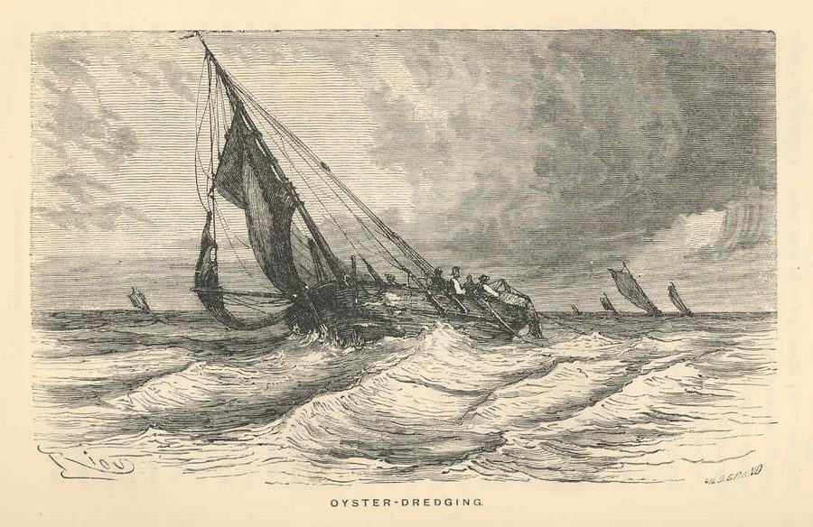
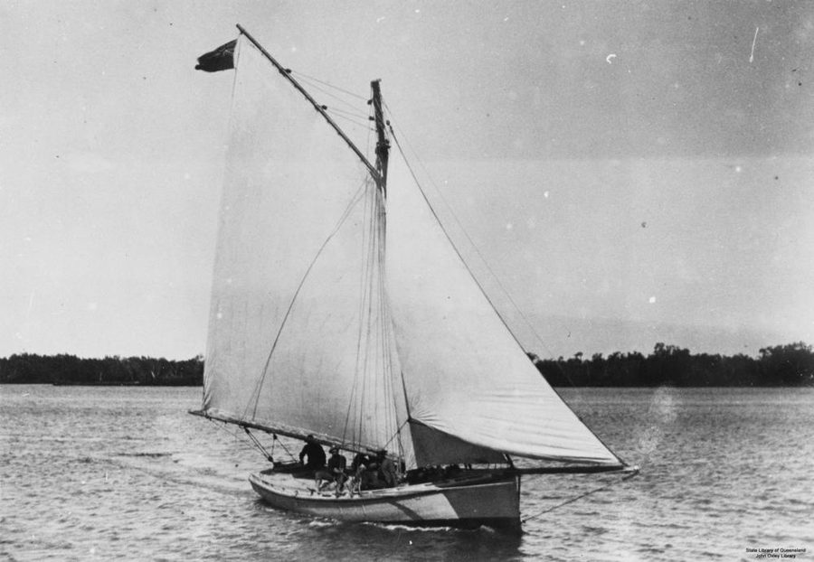
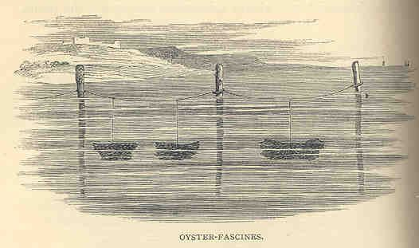

Return
the Shell
An oyster reef is built on the shells of the oysters that came before. In Quandamooka, some people chose a way of living with oysters that kept the shell coming back, while another took it away. This story sets the two side by side and asks what that means for rebuilding the reefs now.
Below is the life of one oyster.
We acknowledge the Quandamooka People, who are the Traditional Owners of the lands and waters of Quandamooka (Moreton Bay). We pay our respects to Elders past and present.
We are university students and we don't speak for Traditional Owners.
A shallow bay behind islands of sand
Quandamooka is the shallow, warm estuarine bay that lies in between the mainland and the large sand islands of Minjerribah and Moreton. Large river catchments like the Brisbane, Pine Rivers, and many others, bring sediment and nutrients from inland. The islands hold back the ocean swell from the east.1
These warm, sheltered, and nutrient-high conditions meant this bay was once thick with oysters.1
One oyster
Early life: at the mercy of the ocean
A Sydney rock oyster (Saccostrea glomerata) begins life as a free-swimming larva that is smaller than a grain of sand. When the water is warm enough, millions are released at once. A single mother can release up to 25 million at a time. Because the larvae are zooplankton, they must ride the tides of the bay for a few weeks.1
Eventually, the larva must find something hard to hold
To survive, the larva has to cement itself to a hard surface. It grows a foot and eye spot to crawl and test surfaces. Once it does, it is called an oyster spat, and it never moves again.
The best surface of all is the shell of an older oyster, which is why oyster reefs form.1
A reef is oysters upon oysters
Oyster reefs form in a similar way to coral reefs. As older animals die, new ones grow on what they leave behind. After many years, the shell will become a three-dimensional structure that shelters young fish and other shellfish.1
If you take that shell away, the next generation has nowhere to land, and the reef will die.
What a reef does for the bay
Oysters feed by pumping water over their gills and filtering out algae and silt. A single oyster can filter up to 100L of water a day, and a reef full of them keeps the water clear. This clear water lets sunlight reach seagrass and corals. This results in a positive ocean-cleaning cycle that contributes to clearer water.1,5
Sea Country
The middens keep the record
Aboriginal people have eaten oysters here for tens of thousands of years. The presence of shell middens in Quandamooka, which are great mounds of oysters and other shells, are proof of this.1,2
Archaeologists date the oldest shell found in these middens to 3,000 to 4,000 years ago, while Aboriginal people contest that date and say they have been here since the beginnings of time. Regardless, they have been here for a long time.1
Looking after the reef
Historian Jodi Frawley records that the Dandrabin-Gorenpul peoples of Quandamooka used a range of strategies to keep oysters plentiful:1
- watching the reefs closely
- moving young oysters to places where they would grow better
- putting spent shell back in the water to build new surface for the next generation
Scientists reviewing the bay's history agree that Quandamooka People probably farmed oysters as well as harvesting them.2
The shell goes back
In this way of working, eating oysters and looking after the reef are parts of one cycle. The shell from a meal becomes the place where the next oysters settle. Returning shell is not a ritual added on top of harvesting. It is the step that makes the next harvest possible.
It is one example of what is often called caring for Country: people are responsible for land and sea, and belong to it, instead of simply owning what it produces.
Skinning the reef
The harm caused by oyster dredging
From the 1860s, settlers moved into the estuaries to supply oysters to growing towns. Frawley writes that they were intent on extracting as many as possible from any one place.1
They broke intertidal reefs apart with steel spikes and dragged wire dredge baskets along the deeper beds. A reef was worked for about three years until every animal was gone. They called it “skinning” the reef.1

Into the walls of a city
Shell that would have gone back to the reef went into the buildings of Brisbane instead.
More oysters sold, less reef left
Oysters sold from Moreton Bay each year, in bags:2

Three Oyster Acts (1863, 1874, 1886) tried to control the harvest and largely failed.2 The reefs themselves were already disappearing while sales were still climbing.3
Then the mud came
Land clearing upstream had been sending more sediment down the rivers and into the bay since about 1870.2
After the big floods of the 1890s, the oysters that were left became infested with mudworm, a shell-boring worm that thrives in silt. The first mass outbreak was recorded in the Coomera River in 1895.1,2
Collapse
By 1898 the oyster fishery had collapsed across most of Moreton Bay.1
With no reef left to filter the water, there was nothing to slow the mud down.
A fix with its own cost
Oysterers turned from harvesting reefs to farming. They caught spat on sticks and grew oysters in the shallows, where drying out at low tide kills mudworm.1
The sticks were cut from mangroves. In one New South Wales river an estimated three million left the estuary by the 1920s. Nobody counted in Queensland.1

Frawley calls this a techno-fix: a new technology to solve the problem the last one caused.
What's left
Moreton Bay now produces less than a tenth of the oysters it did at its peak. Since 1936 its farms have relied on young oysters brought in from New South Wales, because so few settle here naturally.2,3
Same oyster, different questions
First Nations and Western views differ:
This is a simplification. Aboriginal people have worked in the bay's oyster industry from the 1800s to the present,1 and many growers today care deeply about the water they farm in.
Returning
Country back in Quandamooka hands
On 4 July 2011 the Federal Court recognised the Quandamooka People's native title over land and waters on and around Minjerribah.10
The Quandamooka Yoolooburrabee Aboriginal Corporation (QYAC) now manages those rights, with its own rangers and plans for land and sea.
Shell back in the water
Reef-building trials are under way on Quandamooka Sea Country. QYAC and the Minjerribah Moorgumpin Elders-in-Council are working with OzFish, the University of the Sunshine Coast and Healthy Land and Water on a three-year study of where and how reefs can be rebuilt.6
The method echoes the old one: steel baskets and reef modules filled with used oyster shell, set on the bed for spat to settle on.
Borrowing the method is the easy part. The harder question is who is responsible for a reef, and for how long.
What Traditional Owners have asked for
In 2016, 21 Traditional Owners from around Australia and Aotearoa New Zealand, including Quandamooka people, met on Bribie Island at the north of this bay. They gave reef scientists seven pieces of advice:13
- Respect. Acknowledge Country, history, and Indigenous peoples' rights and responsibilities.
- Involve. Design and manage projects together.
- Think local. Build in local needs and Indigenous jobs.
- Share knowledge. Map what was there and what has changed, with the right people.
- Visualise. Agree on what a restored reef looks like. Avoid assigning blame.
- Engage. Start early and stay for the long term.
- Connect. Treat land and sea as one system.
Why the last one matters here
Dredging was only half of what killed the bay's reefs. The other half came from the land: mud from cleared catchments, and the mudworm that came with it.2
A reef project that only looks at the seabed repeats the old mistake of treating the reef as a thing on its own. “Recognise connections between land and sea” is advice from Traditional Owners, and it is also what the ecology says.13
Where the shell comes from
In the north of the bay, volunteers collect used oyster shell, wash it and cure it in the sun for up to four months. Then it goes back into the water as the base for new reef.7
A sculpture that grows
Quandamooka artist Megan Cope's Kinyingarra Guwinyanba is a living artwork on Minjerribah: timber poles from the island, hung with oyster shell and planted in the tidal flat so that a reef can grow on them.5
“It's actually not for us; it's for Country, it's for the oysters.”
New tools for an old practice
How do you know a rebuilt reef is working? Researchers at the University of Queensland and their partners can check with water samples, as every animal sheds traces of DNA.8
On reef modules 9, 21 and 42 months old, they found that life moved in fast, and that older reefs came to resemble one another as their communities matured.8
This study is a 2026 preprint and has not yet been peer reviewed.
Why it matters more now
Climate change is making life harder for oysters. Warmer, more acidic water makes it harder for young Sydney rock oysters to develop and build shell,11 and bigger floods carry more mud and fresh water into the bay.
It is also making reefs more valuable. A living reef breaks up waves, traps silt, and can keep growing upward as the sea rises, which a seawall cannot do.12
Oysters grown on Country again
The oyster industry here began by taking reefs off Quandamooka Sea Country. On Minjerribah it now includes Quandamooka Oyster Farm Tours, a family business and one of the only First Nations-led oyster farm tours in Australia.9
It works three oyster farms growing native Quandamooka rock oysters with modern farming systems. Quandamooka guides walk visitors across the mudflats at low tide, show how an oyster is grown from spat to harvest, and share knowledge of Sea Country and the history of the bay's reefs.9
This is what “think local” looks like in practice: oysters grown, and the story told, by the people whose Country it is.
Next time you eat an oyster
- When you hear about a reef restoration project, ask who is leading it, and whether Traditional Owners helped design it from the start.
- Ask where your oysters were grown, and choose native rock oysters from local growers.
- Ask what happens to the shell. Some venues send theirs to reef restoration.
- Learn from Quandamooka people directly: walk out to the farms with Quandamooka Oyster Farm Tours, or visit a cultural centre on Minjerribah.
- Leave middens and wild oysters where they are. Middens are protected cultural heritage, and the oldest record of how to do this well.
A reef lasts when the shell goes back. That was known here long before anyone measured it.
_-_Ostreidae_-_Mollusc_shell.jpeg){kind=link}


_(San_Salvador_Island,_Bahamas)_7_(15786145972).jpg){kind=link}